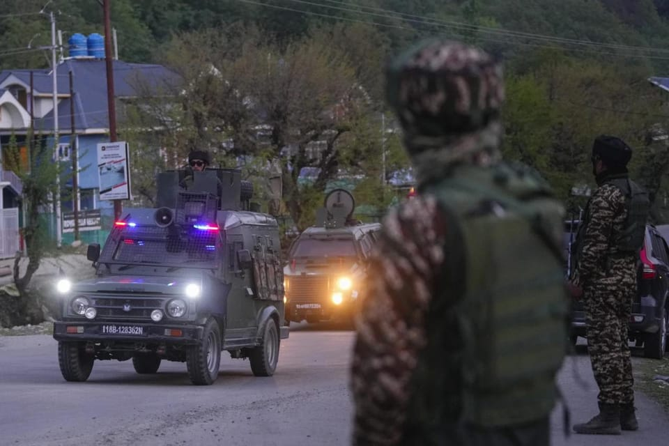

世界苦茶04月23日新闻 | 41条 | 美国释放对中国降低关税信号

美国释放对中国降低关税信号 | 印度在万斯访问期间发生恐袭 | 特朗普表态不会开除美联储主席 | 马斯克压力下将把中心转移到特斯拉 | OpenAI洽购Chrome
透明茶室
苦茶数据
美元兑人民币：7.30（昨日7.31，前日7.29）
美元兑日元：142.21（昨日140.43，前日142.38）
上证指数：3201（昨日3299，前日3286）
标普500指数：5287（昨日5158，前日5282）
比特币：93177（昨日88283，前日87282）
布伦特原油：67.98（昨日66.94，前日66.79）
中国新闻
• 中方监督缅甸停火 ：中国外交部透露，中国已派出停火监督组赴缅甸腊戍，监督缅政府军和果敢同盟军停火。中国外交部星期二主持例行记者会。有记者提问，缅北民地武果敢同盟军今天早些时候撤出缅甸掸邦腊戍城区，并将当地控制权交还缅军。有消息称，腊戍城区换防是中国斡旋促成的，中国近日还派遣了停火监督组赴腊戍开展工作。上述情况是否属实？这是否意味着中国不干涉缅甸内政的承诺已经失效？中国外交部发言人郭嘉昆回应称，中缅是传统友好邻邦，维护缅北地区和平稳定，符合两国和两国人民的根本利益。中国尊重缅甸国家主权和领土完整。根据缅甸相关各方的意愿和诉求，积极协助缅方推进缅北和平进程，为落实缅甸政府和缅北民地武果敢同盟军昆明和谈的共识，应双方共同邀请，中国于近日派出停火监督组赴缅甸腊戍，监督缅军和果敢同盟军停火，见证腊戍城区平稳顺利交接。
• 狄仁杰墓确认挂牌 ：中国河南省洛阳市一处存在争议的古墓挂上文物公示牌，当地文物部门称，已确认是狄仁杰墓。据大皖新闻报道，网传照片可见，墓碑上写着“大唐名相狄梁公墓”，旁边挂上文物安全直接责任人公告公示牌，明确提到该文物名称为狄仁杰墓，级别为洛阳市文物保护单位，直接责任单位为瀍河区白马寺镇人民政府，公告公示单位为瀍河区文旅局。白马寺镇政府工作人员星期二回应称，该墓是市级文保单位，最近属地镇政府根据上级要求，挂上公示牌，至于网民关心的争议是否已尘埃落定、是否最终确认墓主人为狄仁杰，他们无法给出确切答复。 （翻评：墓地里有小时候的狄仁杰佐证吗？）
• 大陆渗透台军升级 ：台湾国防部分析，中国大陆对台湾军事单位的渗透行动已采取全面吸收模式，开始大量接触台军基层士官兵，并以低成本、高代价的网络渗透为主要渠道。综合台湾《联合报》和风传媒报道，台湾立法院外交及国防委员会星期三将邀请国防部长顾立雄、国安局长蔡明彦等机关首长报告并备质询，国防部已将书面报告纸本送交立委立法院办公室。台湾国防部在报告中称，中国大陆目前主要通过黑道帮派、地下钱庄、掩护公司、宫庙团体及民间社团等管道对台进行渗透，手法包括退役官兵拉拢现役官兵、网络勾联、金钱利诱、债务胁迫等手法，以财务问题为突破口，借以发展组织、搜集情报及拍摄宣誓效忠影片，企图影响部队安全。
• 大陆吸引台商策略 ：中国大陆在对台加大军事施压的同时，也在经贸上加大对台的魅力攻势。一项研究显示，2024年共有近四万名台湾人参加了由北京政府主办的商业活动，如会议和贸易展览。据路透社报道，总部设在台湾的非政府组织“台湾资讯环境研究中心”星期二发布的研究报告显示，2024年约有3万9374名台湾人参与了由大陆各级政府单位支持或主办的逾400场商业活动。这份研究报告分析了由中国国务院台湾事务办公室主管的新闻门户网站发布的7300多篇文章。这些文章详细列出了活动的规模、地点和议程。IORG使用了人工智能工具进行分析，并由研究人员进行核实。
• 大陆五渠道渗透台军 ：台湾国防部称，中国大陆利用黑道帮派、地下钱庄等五大管道对台湾军事单位进行渗透。据台湾《联合报》报道，台湾立法院星期一邀请各部会就中国大陆渗透事件进行专题报告。台湾国防部称，中国大陆目前正利用黑道帮派、地下钱庄、掩护公司、宫庙团体、民间社团等五大管道，以退役人员拉拢现役官兵、网络勾联、金钱利诱、债务胁迫四大手法，全面对台军事单位进行渗透。
• 台人赴陆失联82起 ：台湾政府的大陆委员会主委邱垂正受询时说，目前台湾人赴陆被通报失踪、盘查和拘留等个案已达82起，因此呼吁台民众赴陆前先行登录联络信息，让政府可在需要时给予协助。综合台湾《自由时报》和中时新闻网报道，邱垂正星期二赴立法院备询前受访时透露上述信息。他说，有许多家属报案称，他们的亲人赴陆后失踪、被盘查或拘留。这些个案目前已累计达82起，因此政府呼吁台民众在赴陆前，自主登录联络信息，便于政府在需要时给予协助。
• 纪委处分14省部级 ：中国官方通报，今年第一季共处分省部级干部14人，并将954人移送检察机关。中共中央纪委国家监委网站星期二通报今年第一季度全国纪检监察机关监督检查、审查调查情况。据通报，今年第一季度，全国纪检监察机关处置问题线索50.2万件，立案22万件，处分18.5万人（其中党纪处分13.9万人、政务处分6万人。这表明，各级纪检监察机关态度不变、力度不减、重心不偏，坚持无禁区、全覆盖、零容忍，坚持重遏制、强高压、长震慑，治理腐败效能进一步提高。
• 据《韩国经济日报》周二援引政府和企业消息人士的话报道，中国要求韩国企业不要向美国国防企业供应含有稀土元素的产品： 该报道最初称，中国商务部警告韩国企业，如果违反出口限制规定，可能面临制裁。报道称，商务部已致函韩国电力变压器、电池、显示器、电动汽车、航空航天和医疗设备生产企业，传达了这一信息。
亚太印太新闻
• 缅甸延长停火期 ：缅甸国防军总司令部发布公告，宣布延长临时停火期限八天，方便地震灾区的重建工作进行。此前，缅甸国防军宣布4月2日至4月22日实施临时停火。星期二的公告说，国防军将自4月23日至4月30日继续实施临时停火，以迅速开展地震灾区重建，实现国家和平稳定。新华社引述公告说，在临时停火期间，民族地方武装和其他武装组织不得干扰或攻击民众的交通线路、损害生命和公共财产、袭击执行安全和执法工作的安全部队营地、攻击军事基地、集结和改组破坏和平的力量、进行任何领土扩张。如果采取此类行动，国防军将采取必要措施保护民众。
• 越南备战关税谈判 ：越南总理范明政已指示谈判团队，为越南与美国的关税谈判做好充分准备，同时避免对其他地区造成任何影响。范明政星期二在河内举行的一场会议上说，与美方的贸易谈判应确保与越南现有的国际承诺保持一致，并防止对其他市场造成负面影响。越南是最早表现出愿意就关税问题进行谈判的国家之一。特朗普宣布将关税上调措施暂缓90天后，两国随即宣布启动谈判。目前，美国对越南出口产品的关税暂时降至10％，原本拟征收的税率高达46％。
• 金正恩亲信失踪 ：韩国统一部相关人士星期二就朝鲜领导人金正恩的亲信、劳动党中央委员会书记赵甬元和李日焕近两个月未见报一事表示，政府正在关注相关情况。韩联社报道，赵甬元最后一次见报是在2月28日，当时朝媒报道他出席的开丰地方工业厂和综合服务所奠基仪式消息。李日焕1月2日参加努力创新者及有功人士新年纪念合影后也未再露面。
• 韩军重启实弹训练 ：韩国陆军星期二表示，前一天在京畿道坡州市的韩朝军事分界线附近实施炮兵实弹射击训练。韩联社报道，这是自韩朝《九一九军事协议》被叫停后，时隔七年重启这项训练。韩国陆军麾下6门K55A1和12门K9A1自行榴弹炮参加训练，在坡州临津江边的炮阵地向驻韩美军Story射击场内靶标发射了60多枚炮弹。
• 黄国昌否定倒阁 ：台北市长蒋万安抛出的“倒阁说”引发在野讨论通过倒阁解决政治僵局的可能性，但在野的民众党主席黄国昌星期二直言，倒阁救不了台湾。综合台湾《上报》《联合报》报道，黄国昌星期二早上在台北与国民党主席朱立伦举办在野领袖峰会时说，倒阁无法阻止赖清德的专制独裁，要思考的是如何在立法院发挥最强监督力量，不让民进党为所欲为。朱立伦也说，比起倒阁，民众较希望赖清德下台，国民党会制定策略，不是单纯地喊“倒阁”，而是要“倒赖”。 （翻评：俗辣。当然不敢了，现在倒阁重选，民众党能有2席就不错了。）
• 菲律宾放宽台交流 ：菲律宾放宽了该国与台湾政府官员的互动限制，包括允许菲律宾官员出访台湾，以推进菲台经贸关系。综合菲律宾通讯社和《菲律宾每日问询者报》报道，菲律宾总统小马可斯4月15日签署了第32号总统备忘录通告，宣布放宽1989年由时任总统艾奎诺签署的第313号行政命令。这份备忘录于星期一发布。EO 313规定，菲律宾政府官员不得在未经外交部批准的情况下，以公务身份访问台湾、接待到访的台湾官员，或从事任何与台湾相关的官方活动，以体现菲律宾对“一个中国政策”的承认。
• 民宿变移民工具 ：日本媒体报道，当地一些民宿被指不是供游客居住，而是被移民代办收购来为中国客户申请投资移民的临时户口。调查也显示，主办世博会的大阪目前大部分民宿经营者是中国人，质疑有越来越多中国移民是以这个途径获得了居留身份。《读卖新闻》4月18日发表题为“经营民宿成为移民手段”的文章，研判中国人经营的民宿在大阪激增，其背后存在日本移民政策与民宿制度的灰色地带。该报对中国社交媒体流传一篇题为《拿签证很容易》的广告，指在日本取得“经营管理签证”已被移民代办拿来做吸引潜在客户的宣传。根据广告内容：“只要拥有500万日元的资本以及营业场所，无需学历或日语水平，就能在三个月内获得经营管理签证。”
• 日游客抢购韩大米 ：受日本大米价格一年内翻倍影响，越来越多日本游客在访韩期间抢购韩国大米，引发韩国大米购物潮。韩国大米价格仅为日本的三分之一，不少游客通过申报检疫程序，随身携带超过10公斤大米回国。在社交媒体X平台上，类似“韩国旅行大米采购”的分享帖文屡见不鲜。一名日本游客发文称，在韩国某城市发现10公斤装大米售价仅为4000日元，约为日本价格的一半。她还详细介绍了从韩国超市购买4公斤白米和5公斤糙米后，如何在仁川机场检疫所完成申报并顺利带回大阪的过程。韩国农林畜产检疫本部的数据显示，2025年3月签发的出口植物检疫证明书大米总量达1250公斤，同比激增超7700%，件数也从六件暴涨至119件。
• 泰美谈判延期 ：泰国宣布推迟原定于本周与美国进行的关税谈判。彭博社报道，泰国政府发言人吉拉育星期二说，谈判日程进行调整，泰国首席谈判代表、副首相兼财政部长比猜将在当天公布更多细节。比猜原定星期三率领代表团前往美国。吉拉育没有说明更改泰美谈判日期的理由。
科技新闻
• 宁德发布钠电池 ：中国电池巨头宁德时代发布了成本低廉、又能耐极低温的钠离子电池，宣称该产品将重塑电动车产业，撼动锂电池的主导地位。综合法新社、中国基金报和每日经济新闻报道，宁德时代星期一在超级科技日活动上，正式发布首个钠离子电池品牌“钠新”，并推出两款产品：钠新乘用车动力电池和钠新24V重卡启驻一体蓄电池。宁德时代国内乘用车、商用车首席技术官高焕介绍，钠新乘用车电池能在零下40度的环境下保持90%的可用电量。在仅剩10%剩余电量的状态下，钠新乘用车电池仍可做到零下40度整车动力基本不衰减。
• LG退出印尼项目 ：韩国LG能源解决方案公司星期一宣布，正式退出在印度尼西亚的电动车电池生产项目。LG能源与印尼政府于2020年底就“印尼大型一揽子计划”签署协议，涵盖电动车电池供应链的多项投资。LG能源承诺投资142万亿印尼盾。LG能源在一份声明中说：“考虑到市场状况和投资环境等多种因素，我们已同意正式退出‘印尼大型一揽子计划’。”
• OpenAI想买Chrome ：人工智能公司 OpenAI 的 ChatGPT 负责人周二在法庭听证会上说，如果联邦法院裁定谷歌必须剥离Chrome浏览器，那么 OpenAI 会有兴趣购买。当被问及OpenAI是否会寻求收购谷歌浏览器时，ChatGPT负责人尼克·特利回应说道：“是的，我们会，其他很多公司也会。”美国司法部传唤特利出庭作证是为期三周的审判的一部分。在一位联邦法官去年裁定谷歌垄断了搜索市场之后，此次聆讯旨在确定 Alphabet Inc. 旗下的谷歌必须对业务做出哪些调整。法官阿米特·梅塔将在八月前决定谷歌应改变哪些商业行为。美国司法部已要求强制谷歌剥离 Chrome 浏览器。
• AI推动GDP增长 ：国际货币基金组织表示，在2025年至2030年间，AI带来的经济收益将使全球产出每年增长约0.5%，这超过了运行AI模型所需的数据中心产生的碳排放增加所带来的成本。不过，这些产出增长并不会在全球范围内平均分配，并呼吁政策制定者和企业将对更广泛社会造成的成本降至最低。尽管存在与电价上涨和温室气体排放增加相关的挑战，但AI给全球GDP带来的收益可能会超过额外碳排放成本。与AI预期带来的经济收益相比，这些额外排放的社会成本微不足道，但它仍加剧了令人担忧的碳排放累积问题。该报告估计，到2030年，由AI驱动的全球电力需求可能会增加两倍多，达到约1500太瓦时。
财经新闻
• 美国财政部长贝森特4月22日在摩根大通的闭门会议上表示，当前与中国的关税水平不可持续： 他预计两国局势将出现“降级”，但谈判尚未正式开始。贝森特还说，特朗普政府的目的也不是让两国脱钩，而是希望中美两国经济分别向消费和制造业转型。但尚不清楚中国是否准备这样做。总统特朗普随后也表示 ，不会对中国采取强硬措施，并相信协议可以“很快”达成，最终关税将“大幅”下降。
• 特朗普称不解雇鲍威尔 ：美国总统特朗普4月22日表示，他无意解雇美联储主席鲍威尔，只是希望他在降低基准利率上更加积极。这与特朗普此前的表态大相径庭。特朗普此前曾多次公开表达对现利率和鲍威尔的不满，希望鲍威尔离职，并认为他可以让鲍威尔走人。特朗普此前的言论令投资者担心利率可能受到政治而非经济基本面的影响，美股21日大跌。但在特朗普22日发言后，美国主要股指期货大幅上涨。 （翻评：特朗普似乎在很多问题上开始软化。）
• 美关税或致英通缩 ：英国央行鹰派决策委员梅根·格林认为，美国总统特朗普的全球关税浪潮更可能对英国物价构成下行压力，而非推动通胀上升。在星期二接受彭博电视采访时，格林指出，由于对供给侧限制、高工资增长以及服务业持续通胀的担忧，她在英国央行利率制定委员会中一直持更加谨慎的立场。然而，她补充道：“我认为，关税实际上更多地代表了通胀放缓而非通胀走高的风险。因此，我们需要密切关注未来的发展情况。”
• 特斯拉利润暴跌 ：特斯拉4月22日发布财报，一季度营收193.4亿美元，同比下降9%；汽车业务收入下降20%；净利润为4.09亿美元，暴跌71%。马斯克随即表示，他将重返特斯拉，并自下个月起将其在政府效率部的工作时间减少至每周一两天。分析师将下降归咎于马斯克在特朗普政府担任有争议的角色以及在欧洲政坛的活跃。马斯克为其在政府效率部的工作辩解称，有必要削减“浪费和欺诈”，呼吁投资者不要着眼于眼前的障碍。马斯克还称关税决定取决于美国总统，他曾多次公开表示降低关税有利于繁荣，并将继续倡导降低关税。
• 丰田雷克萨斯落地上海 ：上海市政府与日本丰田汽车签署战略合作协议，确认丰田独资设立的雷克萨斯项目正式落地上海。综合澎湃新闻和上观新闻报道，上海市政府与丰田汽车星期二正式签署战略合作协议，金山区政府与丰田中国签署合作备忘录，金山区新金山发展公司与雷克萨斯新能源有限公司签署投资服务协议。上述协议的签署标志着由丰田汽车独资设立的雷克萨斯纯电动汽车及电池的研发生产公司，在上海市金山区正式落地。根据协议，双方合作范围涉及物流网络、产业链上下游、氢能、智能自动驾驶、电池回收再利用等。
• 瑞银与印度合作 ：为加强拓展印度市场，瑞银与印度其中一家最大的独立财富与资产管理公司360 ONE展开独家策略合作。瑞银星期二的文告指出，作为合作的一部分，在符合监管要求和获得批准的情况下，两家机构的客户都能获得在岸和离岸财富管理服务。双方也探索资产管理产品和投资银行服务的潜在合作机会。此外，瑞银将把它在印度的财富管理业务转移到360 ONE，而在新加坡的360 ONE客户将由瑞银新加坡提供服务，但须获得所需的批准，包括监管批准。
• 韩副总理访美谈贸易 ：韩国经济副总理兼企划财政部长崔相穆星期二启程赴美，代总统韩悳洙相信韩国与美国的贸易谈判将能达成互利共赢方案。韩联社报道，崔相穆在仁川国际机场向记者说，他将借此行推动韩美同盟关系全新发展。韩国代总统韩悳洙在当天的内阁会议中说，他预期韩国与美国的贸易谈判能为双方达成互惠互利的解决方案铺平道路。
• 柬修改法避关税 ：为了避免被美国征收高额关税，柬埔寨政府将修改法规，加强对进口商品的管制，防止柬埔寨被中国等国企业利用为中转站“洗产地”。据《柬中时报》报道，由柬埔寨副总理孙展拓领导的“柬美贸易与投资关系工作组”，于4月16日通过视频会议与美国贸易代表格里尔展开首轮贸易谈判，柬埔寨希望美国打消对柬埔寨商品征收高昂关税的念头。美国本月初宣布对柬埔寨加征的对等关税高达49%，税率比邻国越南、泰国、马来西亚等还来的高。
• 美印贸易会谈进展 ：美国副总统万斯在新德里与印度总理莫迪举行贸易会谈。印度希望与美国早日达成协议，避免被美国进一步提高关税。路透社报道，白宫发表声明说，此次会谈是双边贸易协定谈判的一个“重大进展”，双方已敲定一份旨在降低关税的可能协议路线图。美国总统特朗普4月初宣布，将对印度实施26%的对等关税，新德里正急于争取特朗普政府减免关税。
• 谷歌考虑将Pixel手机生产从越南迁至印度： 美国当前的关税形势正迫使企业寻找解决方案，以降低对运往该国产品的冲击，这其中包括谷歌等科技巨头。据报道，为了规避高额关税，谷歌正在考虑将旗下Pixel手机的生产迁出越南。越南长期以来一直是Pixel手机的生产基地，但如今谷歌可能在考虑转向其他国家。谷歌正在评估将制造流程从越南转移到印度的可能性，并已与印度的制造合作伙伴迪克森科技和富士康展开初步洽谈，计划将部分供应链迁至印度。越南此前曾面临美国政府征收的 46% 商品关税，不过随后该关税被暂停实施90天。同时，印度目前的关税率为 26%，如果关税不被取消或暂停期未能延长，印度将成为更具吸引力的生产地。
• 广交会禁提前撤展 ：在中美贸易战升级的背景下，为推动参展商进一步提高吸引销售的机会，中国进出口商品交易会业务办公室通知参展商不要提前撤展。据广交会官网消息，广交会分三期举行，第一期是4月15日至19日、第二期为4月23日至27日，第三期则为5月1日至5日。广交会业务办公室4月15日给各交易商团、商（协）会发布通知称，当前外贸形势严峻复杂，要求企业用足广交会五天展期，不提前撤展，工作人员不提前离开展位。在每期第五天下午6时前，大会将组织专项检查，提前撤离展位、撤出展品的，将取消该交易团当届表彰资格，并进行通报。 （翻评：这本身就是一个很糟糕的信号，说明今年广交会非常冷。）
• 电商平台取消仅退款 ：获悉拼多多、淘宝、抖音、快手、京东等多个电商平台将全面取消 “仅退款”，消费者收到货后的退款不退货申请，将由商家自主处理。这意味着，“仅退款”在2021年时被拼多多率先推出，后在2024年时被京东、淘宝、抖音、快手等相关平台相继引入，历时四年正式迎来落幕。还获悉上述电商平台已就全面取消 “仅退款” 的相关细节与管理部门进行了多轮商讨和修改，一旦审核完成即对社会公开宣布。取消 “仅退款” 早有预兆。今年两会期间，国家相关管理部门释放了强烈的信号，明确表示会对平台滥用仅退款规则，造成商户货款两空的突出问题进行治理。
• 美国劳工委员会要求亚马逊与工会进行谈判： 美国劳工委员会检察官正试图强制亚马逊与旧金山仓库员工进行集体谈判，此举为国际卡车司机兄弟会在这家电商巨头建立组织的努力提供了助力。美国国家劳工关系委员会一位地区主管在周一的诉状中指控，亚马逊去年秋天拒绝与加入卡车司机工会的旧金山仓库员工谈判，违反了联邦法律。据悉这份诉状寻求一项命令，要求该公司承认该工会并真诚进行谈判，这可能会在该公司内部建立一个新的劳工据点。亚马逊在一份电子邮件声明中表示，这一投诉基于毫无根据的法律理论，破坏了员工权利。无视劳工委员会数十年的惯例，且无视最高法院的先例。
俄乌战争
• 乌克兰总统泽连斯基4月22日表示，在达成停火后，乌方愿意以“任何形式”坐到谈判桌前，但永远不会承认被占领土属于俄罗斯： 他希望俄方也做好进行真正谈判的准备。俄罗斯总统普京21日提出与乌克兰进行双边会谈。泽连斯基未回应该提议，但表示当务之急是实现停火，尤其是在平民目标上。泽连斯基说，乌方团队23日将在英国伦敦与英国、法国、德国和美国代表举行会谈，讨论全面或部分停火事宜，乌方已为此做好准备。
• 美特使将访俄 ：俄罗斯克里姆林宫助理乌沙科夫说，美国总统特使史蒂夫·威特科夫本周将访问莫斯科。路透社引述国际文传电讯社的报道说，克里姆林宫外交政策顾问尤里·乌沙科夫星期二，在记者提问威特科夫是否会访问莫斯科时答复道：“会的。”这将是自美国总统特朗普上任以来，威特科夫第四次访问莫斯科，此前，威特科夫曾与俄罗斯总统普京举行过三次长时间会谈，探讨结束乌克兰战争的前景。
• 俄警告勿急和谈 ：克里姆林宫星期二警告，不要仓促启动乌克兰和谈。克宫发言人佩斯科夫接受国家电视台采访时指出，谈判是非常复杂的，“因此，设定任何僵化的时间表，并试图在短时间内达成一项可行的和解，或许是行不通的。”消息说，乌克兰的盟友星期三将在伦敦举行会议。美国国务卿鲁比奥、美国中东问题特使维特科夫和乌俄问题特使凯洛格，预料将与法国、德国、英国和乌克兰的官员们会面，继续推动俄乌达成一项和平协议。这次会晤是上周巴黎会晤的延续。
• 美高官赴英谈和谈 ：美国高级官员星期三将到英国首都伦敦与乌克兰和欧洲官员会晤，继续推动俄罗斯和乌克兰达成一项和平协议。彭博社报道，要求不具名的知情人士透露，美国国务卿鲁比奥、美国中东问题特使维特科夫和乌俄问题特使凯洛格，预计将与法国、德国、英国和乌克兰的外交部长和国家安全顾问会面。星期三的会晤是上周巴黎会晤的延续，美国在上周会议提出促成俄乌达成停火与和平协议的建议。彭博社此前报道，作为俄乌协议的一部分，美国准备放松对莫斯科的制裁，并承认俄罗斯对乌克兰克里米亚半岛的控制。
• 俄罗斯设立“China Track”结算系统，助俄中贸易绕过制裁难题 ：银行业消息人士向路透透露，俄罗斯主要银行建立了一个名为“China Track”的净额结算系统，用于结算与中国的交易，目的是使西方监管机构难以追踪这些交易，从而减少二级制裁的风险。新系统由受制裁的大银行建立，涉及众多在俄罗斯认定的友好国家注册的中介机构。该系统已运行一段时间，尚未遭遇任何重大问题。
其他新闻
• 加沙遭以军空袭 ：加沙居民称，以色列军方星期二发动了数周以来最大规模的空袭之一。卫生官员再次警告，因为以色列封锁所有物资，加沙的医疗保健系统面临全面崩溃。居民们说，以军用坦克、飞机和海军舰艇轰炸加沙多个地区，房屋、帐篷营地和道路被炸。空袭摧毁了用于清理废墟和协助移走被困尸体的推土机和车辆。自3月初以来，以色列全面封锁所有通往加沙的物资，并在停火协议破裂后于3月18日重启军事行动。
• 克什米尔恐袭26死 ：印控克什米尔地区帕哈尔加姆镇4月22日发生枪击事件。至少4名枪手近距离对游客进行无差别射击，造成至少26人死亡、30余人受伤，其中许多人伤势严重。警方将这起事件描述为“恐怖袭击”，并指责反抗印度统治的武装分子为此事负责。袭击现场已被封锁，警方正展开行动追捕枪手。